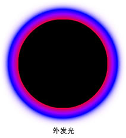
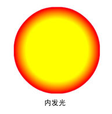

| 包 | flash.filters |
| 类 | public final class GradientGlowFilter |
| 继承 | GradientGlowFilter |
| 语言版本: | ActionScript 3.0 |
| 运行时版本: | AIR 1.0, Flash Player 9 |
滤镜的具体使用取决于要应用滤镜的对象：
- 要对显示对象应用滤镜，请使用
filters属性。设置对象的filters属性不会修改相应的对象，而清除filters属性可以删除相应的滤镜。 - 要对 BitmapData 对象应用滤镜，请使用
BitmapData.applyFilter()方法。对 BitmapData 对象调用applyFilter()会取得源 BitmapData 对象和滤镜对象，并最终生成一个过滤图像。
如果对显示对象应用滤镜，显示对象的 cacheAsBitmap 属性将设置为 true。如果清除所有滤镜，将恢复 cacheAsBitmap 的原始值。
此滤镜支持舞台缩放。但是，它不支持常规缩放、旋转和倾斜；如果对象本身进行了缩放（如果将 scaleX 和 scaleY 设置为除 1.0 以外的其他值），滤镜效果将不进行缩放。只有用户在舞台上进行放大时它才会缩放。
如果所得图像超过最大尺寸，则不应用滤镜。在 AIR 1.5 和 Flash Player 10 中，最大宽度或高度为 8,191 像素，并且像素总数不能超过 16,777,215 像素。（因此，如果图像的宽度为 8,191 像素，则其高度只能为 2,048 像素。）在 Flash Player 9 及早期版本和 AIR 1.1 及早期版本中，高度最大为 2,880 像素，宽度最大为 2,880 像素。例如，如果在放大某大型影片剪辑时应用了滤镜，则所得图像超过最大尺寸时，将关闭该滤镜。
相关 API 元素
flash.display.BitmapData.applyFilter()
flash.display.DisplayObject.cacheAsBitmap
flash.display.DisplayObject.filters
GlowFilter 类
 隐藏继承的公共属性
隐藏继承的公共属性 显示继承的公共属性
显示继承的公共属性| 属性 | 由以下参数定义 | ||
|---|---|---|---|
| alphas : Array
colors 数组中对应颜色的 Alpha 透明度值的数组。 | GradientGlowFilter | ||
| angle : Number
角度，以度为单位。 | GradientGlowFilter | ||
| blurX : Number
水平模糊量。 | GradientGlowFilter | ||
| blurY : Number
垂直模糊量。 | GradientGlowFilter | ||
| colors : Array
定义渐变的颜色数组。 | GradientGlowFilter | ||
 | constructor : Object
对类对象或给定对象实例的构造函数的引用。 | Object | |
| distance : Number
光晕的偏移距离。 | GradientGlowFilter | ||
| knockout : Boolean
指定对象是否具有挖空效果。 | GradientGlowFilter | ||
| quality : int
应用滤镜的次数。 | GradientGlowFilter | ||
| ratios : Array
对应于 colors 数组中颜色的一组颜色分布比率。 | GradientGlowFilter | ||
| strength : Number
印记或跨页的强度。 | GradientGlowFilter | ||
| type : String
滤镜效果的放置。 | GradientGlowFilter | ||
| 方法 | 由以下参数定义 | ||
|---|---|---|---|
GradientGlowFilter(distance:Number = 4.0, angle:Number = 45, colors:Array = null, alphas:Array = null, ratios:Array = null, blurX:Number = 4.0, blurY:Number = 4.0, strength:Number = 1, quality:int = 1, type:String = "inner", knockout:Boolean = false)
用指定参数初始化滤镜。 | GradientGlowFilter | ||
[覆盖]
返回此滤镜对象的副本。 | GradientGlowFilter | ||
|
表示对象是否已经定义了指定的属性。 | Object | |
|
表示 Object 类的实例是否在指定为参数的对象的原型链中。 | Object | |
|
表示指定的属性是否存在、是否可枚举。 | Object | |
|
设置循环操作动态属性的可用性。 | Object | |
|
返回此对象的字符串表示形式，其格式设置遵守区域设置特定的约定。 | Object | |
|
返回指定对象的字符串表示形式。 | Object | |
|
返回指定对象的原始值。 | Object | |
alphas | 属性 |
alphas:Array| 语言版本: | ActionScript 3.0 |
| 运行时版本: | AIR 1.0, Flash Player 9 |
colors 数组中对应颜色的 Alpha 透明度值的数组。数组中每个元素的有效值为 0 到 1。例如，0.25 将 Alpha 透明度值设置为 25%。
alphas 属性不能通过直接修改它的值来进行更改。相反，必须获得对 alphas 的引用，对该引用进行更改，然后将 alphas 设置为该引用。
colors、alphas 和 ratios 属性是相关的。colors 数组中的第一个元素对应于 alphas 数组中的第一个元素以及 ratios 数组中的第一个元素，依此类推。
实现
public function get alphas():Array public function set alphas(value:Array):void引发
TypeError — 设置时 Array 为 null
|
相关 API 元素
angle | 属性 |
blurX | 属性 |
blurY | 属性 |
colors | 属性 |
colors:Array| 语言版本: | ActionScript 3.0 |
| 运行时版本: | AIR 1.0, Flash Player 9 |
定义渐变的颜色数组。例如，红色为 0xFF0000，蓝色为 0x0000FF 等等。
colors 属性不能通过直接修改它的值来进行更改。相反，必须获得对 colors 的引用，对该引用进行更改，然后将 colors 设置为该引用。
colors、alphas 和 ratios 属性是相关的。colors 数组中的第一个元素对应于 alphas 数组中的第一个元素以及 ratios 数组中的第一个元素，依此类推。
实现
public function get colors():Array public function set colors(value:Array):void引发
TypeError — 设置时 Array 为 null
|
相关 API 元素
distance | 属性 |
knockout | 属性 |
quality | 属性 |
quality:int| 语言版本: | ActionScript 3.0 |
| 运行时版本: | AIR 1.0, Flash Player 9 |
应用滤镜的次数。默认值为 BitmapFilterQuality.LOW，与应用一次滤镜等效。值 BitmapFilterQuality.MEDIUM 两次应用滤镜；值 BitmapFilterQuality.HIGH 三次应用滤镜。滤镜的值越小，呈示速度越快。
对于大多数应用，quality 的值为低、中或高就足够了。您可以使用其他数值（最高为 15）来达到不同的效果，但是值越高，呈示速度越慢。除了增加 quality 的值，仅增加 blurX 和 blurY 属性的值通常也可以获得类似的效果，而且呈现速度更快。
实现
public function get quality():int public function set quality(value:int):void相关 API 元素
ratios | 属性 |
ratios:Array| 语言版本: | ActionScript 3.0 |
| 运行时版本: | AIR 1.0, Flash Player 9 |
对应于 colors 数组中颜色的一组颜色分布比率。有效值为 0 到 255。
ratios 属性不能通过直接修改它的值来进行更改。相反，必须获得对 ratios 的引用，对该引用进行更改，然后将 ratios 设置为该引用。
colors、alphas 和 ratios 属性是相关的。colors 数组中的第一个元素对应于 alphas 数组中的第一个元素以及 ratios 数组中的第一个元素，依此类推。
如果 distance 值设置为 0，则将渐变发光滤镜看作从对象中心发出的具有渐变（即相互混合的颜色条纹）的发光。colors 数组中的第一种颜色是光晕最外面的颜色。最后一种颜色是光晕最里面的颜色。
ratios 数组中的每个值设置颜色在渐变的半径上的位置，其中 0 表示渐变最外面的点，255 表示渐变最里面的点。比例值范围是从 0 到 255 像素，它们的值依次增加；例如 [0, 64, 128, 200, 255]。从 0 到 128 的值出现在光晕的外缘上。从 129 到 255 的值出现在光晕的内侧区域中。根据颜色的比例值和滤镜的 type 值，滤镜颜色可能会被应用滤镜的对象遮住。
在下面的代码和图像中，将滤镜应用于黑色的圆影片剪辑，并将类型设置为 "full"。基于教学目的，colors 数组中的第一种颜色（粉色）的 alpha 值为 1，以便与白色文档背景形成鲜明对比。（实际上，您可能不希望这样显示第一种颜色。） 数组中的最后一种颜色（黄色）遮住了应用滤镜的黑色圆盘：
var colors:Array = [0xFFCCFF, 0x0000FF, 0x9900FF, 0xFF0000, 0xFFFF00]; var alphas:Array = [1, 1, 1, 1, 1]; var ratios:Array = [0, 32, 64, 128, 225]; var myGGF:GradientGlowFilter = new GradientGlowFilter(0, 0, colors, alphas, ratios, 50, 50, 1, 2, "full", false);

要在将 type 值设置为 "outer" 或 "full" 时实现与文档背景的无缝效果，请将数组中的第一种颜色设置为与文档背景相同的颜色，或将第一种颜色的 Alpha 值设置为 0；或者使用技巧将滤镜与背景混合在一起。
如果在代码中进行两处小的更改，发光效果可能会大不相同，即使采用相同的 ratios 和 colors 数组。将数组中第一种颜色的 Alpha 值设置为 0，以便滤镜和文档的白色背景混合在一起；并将 type 属性设置为 "outer" 或 "inner"。观察结果，如下面的图像所示。

请记住，颜色在渐变中的散布基于 blurX、blurY、strength 和 quality 属性的值以及 ratios 值。
实现
public function get ratios():Array public function set ratios(value:Array):void引发
TypeError — 设置时 Array 为 null
|
相关 API 元素
strength | 属性 |
type | 属性 |
type:String| 语言版本: | ActionScript 3.0 |
| 运行时版本: | AIR 1.0, Flash Player 9 |
滤镜效果的放置。可能的值是 flash.filters.BitmapFilterType 常量：
BitmapFilterType.OUTER-- 对象外缘上的发光BitmapFilterType.INNER-- 对象内缘上的发光；默认值。BitmapFilterType.FULL-- 对象顶部的发光
实现
public function get type():String public function set type(value:String):void引发
TypeError — 设置时 String 为 null
|
GradientGlowFilter | () | 构造函数 |
public function GradientGlowFilter(distance:Number = 4.0, angle:Number = 45, colors:Array = null, alphas:Array = null, ratios:Array = null, blurX:Number = 4.0, blurY:Number = 4.0, strength:Number = 1, quality:int = 1, type:String = "inner", knockout:Boolean = false)| 语言版本: | ActionScript 3.0 |
| 运行时版本: | AIR 1.0, Flash Player 9 |
用指定参数初始化滤镜。
参数distance:Number (default = 4.0) | |
angle:Number (default = 45) | |
colors:Array (default = null) | |
alphas:Array (default = null)colors 数组中对应颜色的 Alpha 透明度值的数组。数组中每个元素的有效值为 0 到 1。例如，值 0.25 将 Alpha 透明度值设置为 25%。
| |
ratios:Array (default = null) | |
blurX:Number (default = 4.0) | |
blurY:Number (default = 4.0) | |
strength:Number (default = 1) | |
quality:int (default = 1)
有关详细信息，请参阅 | |
type:String (default = "inner")
| |
knockout:Boolean (default = false)true 将指定应用挖空效果；默认值为 false，即不应用挖空效果。
|
clone | () | 方法 |
override public function clone():BitmapFilter| 语言版本: | ActionScript 3.0 |
| 运行时版本: | AIR 1.0, Flash Player 9 |
返回此滤镜对象的副本。
返回BitmapFilter — 与原始 GradientGlowFilter 实例具有完全相同的属性的新 GradientGlowFilter 实例。
|
- 导入所需的类。
- 声明用于定义正方形和滤镜的全局变量。
- 创建构造函数，该函数执行以下操作：
- 调用
draw()方法，该方法使用 Graphics 类的方法（通过 Sprite 的graphics属性访问）绘制一个正方形。 - 创建名为
filter的 BitmapFilter 对象，并将对getBitmapFilter()（用于创建滤镜）的调用的返回值赋予它。 - 创建一个名为
myFilters的新数组，并将filter添加到该数组。 - 将
myFilters分配给 GradientGlowFilterExample 对象的filters属性。这将应用myFilters中包含的所有滤镜，在本例中仅为filter。
- 调用
package {
import flash.filters.BitmapFilter;
import flash.filters.BitmapFilterQuality;
import flash.filters.BitmapFilterType;
import flash.filters.GradientGlowFilter;
import flash.display.Sprite;
public class GradientGlowFilterExample extends Sprite {
private var bgColor:uint = 0xCCCCCC;
private var size:uint = 80;
private var offset:uint = 50;
private var distance:Number = 0;
private var angleInDegrees:Number = 45;
private var colors:Array = [0xFFFFFF, 0xFF0000, 0xFFFF00, 0x00CCFF];
private var alphas:Array = [0, 1, 1, 1];
private var ratios:Array = [0, 63, 126, 255];
private var blurX:Number = 50;
private var blurY:Number = 50;
private var strength:Number = 2.5;
private var quality:Number = BitmapFilterQuality.HIGH;
private var type:String = BitmapFilterType.OUTER;
private var knockout:Boolean = false;
public function GradientGlowFilterExample() {
draw();
var filter:BitmapFilter = getBitmapFilter();
var myFilters:Array = new Array();
myFilters.push(filter);
filters = myFilters;
}
private function getBitmapFilter():BitmapFilter {
return new GradientGlowFilter(distance,
angleInDegrees,
colors,
alphas,
ratios,
blurX,
blurY,
strength,
quality,
type,
knockout);
}
private function draw():void {
graphics.beginFill(bgColor);
graphics.drawRect(offset, offset, size, size);
graphics.endFill();
}
}
}
Tue Jun 12 2018, 11:04 AM Z